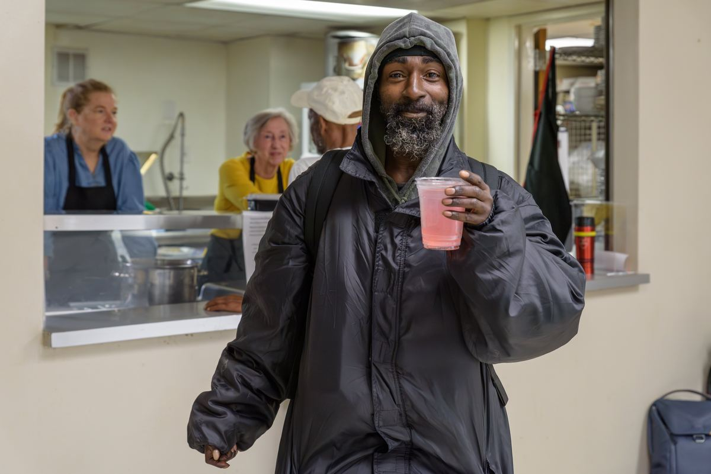
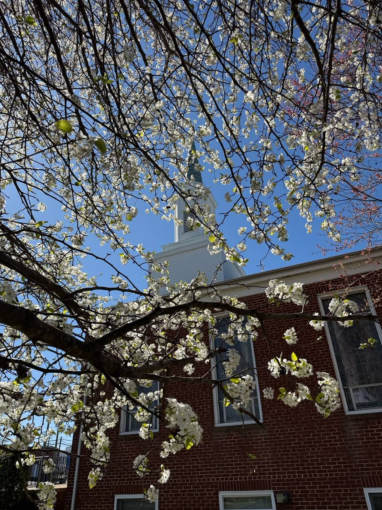

About us
A neighborhood church, in the neighborhood.
South Tryon Community Missional United Methodist Church sits between Brookhill Village and Southside Homes, at the place where Charlotte's building boom runs into people who have been here a long time.
What we're trying to do.
Our vision: a neighborhood church transforming lives with love, justice, and community.
Our mission: building relationships, advocating for justice, and empowering our neighborhood through Christ's love.
Grace comes first here. That means we welcome people regardless of background, struggle, or status, and we try to respond with patience when things are hard. It also means we keep this space safe and holy, which sometimes takes work.

How we live.
Reside
We live alongside and love our neighbors in South Charlotte with openness and inclusion.
Presence
We practice being present to God, to one another, and to those often ignored by society.
Grow
We listen for what is needed to pursue transformation in self, neighborhood, and city.
Be Bold
We act courageously, sacrifice when necessary, and speak truth to power for the sake of God's justice.
The land has a longer memory than we do.
The lot this building sits on was recorded as part of the Brookhill Village subdivision, laid out in the late 1940s under a federal housing program. For decades Brookhill was one of the few places in Charlotte where Black families could rent. The ground under this church and the ground under those apartments came off the same plat.
More than one congregation has gathered on this corner since then. We are a newer church in an older building, and we are still working through the deeds and the records to get the story right. There is more to it than we can put on a page yet.

Brookhill Village and Southside Homes.
Brookhill was built in the late 1940s, and for a long stretch it was one of the few places in Charlotte where Black families could rent. People stayed. About a fifth of households there have been in place more than twenty years, nearly half more than ten. Residents describe a community of family — people who grew up together, who watch each other's children, who show up when somebody is in trouble. It sits close to transit, close to work, and more than half of residents surveyed said being close to a place of worship mattered to them a great deal.
Southside Homes sits next door, with its own long memory.
None of that is guaranteed to survive what's coming. Property values in South End keep climbing, redevelopment proposals keep arriving, and there's no assurance that families priced out will find anywhere nearby to land.
So we do two things. We show up at the meetings where these decisions get made, and we keep after the people who can shape them. And we will keep buidling community connections that will last.
Figures from the 2021 Brookhill Community Asset and Needs Assessment, conducted by the UNC Charlotte Urban Institute with United Way and the South Tryon Community Development Corporation.
You are welcome here.
To all, regardless of age, race, background, immigration status, gender identity, sexual orientation, marital status, what you earn, or what you're carrying: God loves you, and we do too.